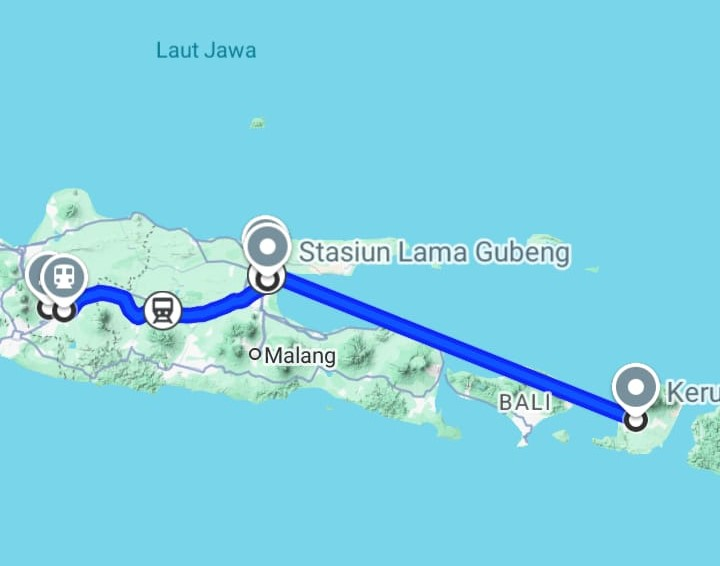
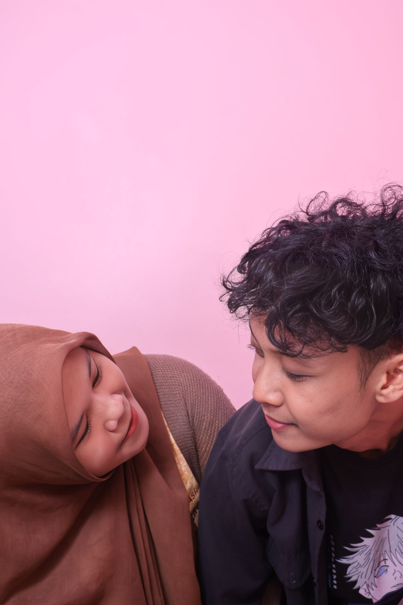
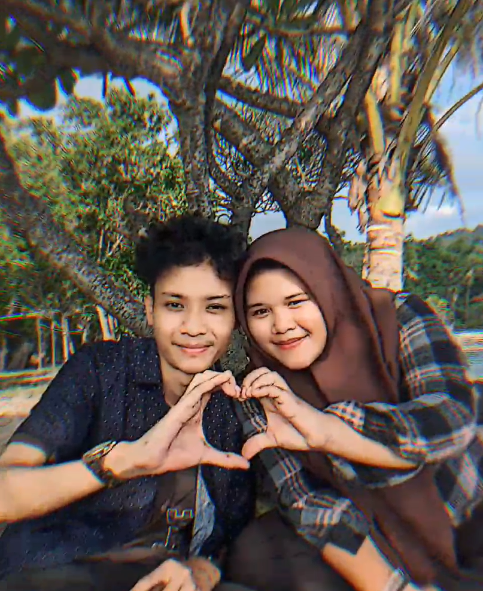
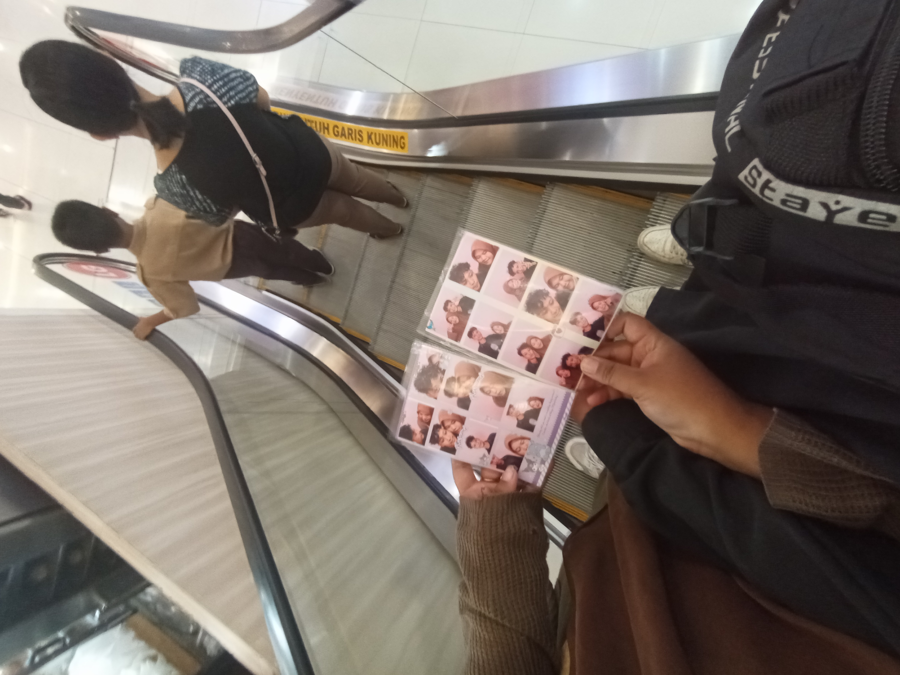

Akhirnya setelah sekian lama, saya, Bima, berangkat sendirian dari Solo menuju Lombok untuk bertemu dengan Ririn. Perjalanan ini penuh dengan berbagai macam perasaan, dari rasa rindu, gugup, harus kuat mental sampai harapan bisa bertemu langsung setelah sekian lama menjalin hubungan jarak jauh.
Lagu yang Menemani Perjalanan
Selama perjalanan, ada satu lagu yang terus menemani saya dan memberikan semangat untuk segera sampai di Lombok. Lagu ini menjadi soundtrack dari perjalanan yang penuh emosi ini.
Perjalanan Solo ke Lombok
Saya memulai perjalanan dari Solo, Jawa Tengah menaiki kereta api Sancaka dengan relasi Solo Balapan - Surabaya Gubeng dan dilanjutkan dengan kapal laut DLU Ferry KM. KIRANA VII dari Pelabuhan Tj. Perak Surabaya menuju Pelabuhan Lembar, Lombok Barat. Perjalanan terasa sangat panjang menempuh waktu hingga 1 Hari 6 jam, namun semua rasa lelah hilang saat akhirnya saya menginjakkan kaki di Lombok. Pikiran saya cuma satu: akhirnya bisa ketemu Ririn calon istri saya.

Pertemuan di Lombok
Setelah sampai di Lombok, saya dan Ririn akhirnya bertemu. Momen ini sangat emosional. Melihat Ririn secara langsung untuk pertama kalinya adalah perasaan yang sulit dijelaskan dengan kata-kata. Kami menghabiskan waktu bersama, berbagi cerita, dan menikmati keindahan Lombok. Sebuah pertemuan yang akan selalu saya ingat. Saya dan Ririn sangat berbahagia biasanya VC telp terus menerus dan akhirnya bisa ketemu langsung, saya ga nyangka bisa ketemu, ngerasain hati saya penuh dengan darah cinta yang membanjiri hati, nangis bisa melihat sang kekasih calon istri saya.

Momen Menyedihkan
Pada hari Kamis tanggal 26 September saya sudah berencana untuk pulang ke Surabaya tapi berkata lain ada musibah menimpa saya, hp saya mati total ketika saya berlibur di Pantai Klui, Lombok. Besoknya saya cari konter hp akhirnya ketemu nama konter hp nya KK Teknologi, oke disitu saya bilang ke teknisi nya:
Kata teknisi nya: "kita usahakan ya mas semoga bisa di benerin nanti konfirmasi soal biaya, mas nanti bisa kesini lagi jam 5 sore." Tak lama kemudian teknisi berkata: "mohon maaf mas ini yang kenak IC power, dan saya tidak ada alatnya." Dan disitu saya bingung mau gimana lagi tidak pegang uang cash dan saya ga makan seharian.
Info Detail →
Momen Menyedihkan Saya Pulang Ke Jawa
Saya ga bisa berkata-kata disini, saya merasa sedih sekali meninggalkan calon istri saya Ririn. Hari Sabtu Tanggal 28 September 2024 kita berdua berencana pergi liburan untuk terakhir kalinya. Kita berencana pergi ke Mall Lombok Epicentrum untuk berfoto studio karena foto-foto yang ada di hp saya Google Pixel 5 belum saya backup.
Setelah itu saya dan calon istri saya Ririn beranjak untuk makan-makan di Mall tersebut dan memilih untuk jajan beli KFC — saya baru pertama kalinya bisa beli KFC bareng calon istri saya Ririn. Beberapa jam kemudian kita berdua berencana ke Pantai Klui, disana kita berdua makan-makan dan bercerita melihat pemandangan dengan sang kekasih calon istri saya yang paling cantik dan menawan.
Momen paling menyedihkan terjadi waktu sudah menunjukan pukul 17.00 WITA, saya menangis karena pergi ke Jawa. Saya di antar calon istri saya Ririn ke Lembar sekitar 1 jam perjalanan. Ketika sudah sampai di Lembar saya menangis tidak berhenti, saya khawatir sama Ririn karena jauh dan dia tidak membawa uang cash, dan waktu sudah malam. Campur aduk rasanya, ketika menjelang Maghrib tiba saya berangkat ke Pelabuhan Lembar dan menaiki Kapal KM DLN OASIS.
Info Detail →
Forensic Relationship Analysis (2026)
Dinamika perjalanan hubungan kami berlanjut hingga tahun 2026 dengan berbagai ujian trust, luka yang belum tuntas, dan tantangan komunikasi yang kompleks. Analisis mendalam berbasis fakta, kronologi chat notebook, serta evaluasi pola interaksi telah didokumentasikan secara terpisah.
Info Selengkapnya
Info mengenai cerita yang lebih detail bisa klik tombol di bawah, dan bisa juga mengenai tiket Kereta dan Kapal Ferry ingin berlibur ke Lombok. Sekian pengalaman bertemu dengan calon Istri saya Ririn Setiawati — Sayangku, Cintaku, Istriku hehe 🤍